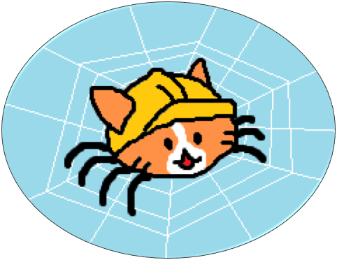

About Me
I've always been motivated by curiostiy. From Math and Science to Art and Liturature, I find these ways of thinking and expression to be fascinating. I became a Software Engineer because I consider it to have the best parts of every feild. It has the theoretical and abstract ideas that refined my technical abilities during my undergraduate studies. It's practical capabilities and how it has transformed every aspect of modern life still amazes me. And I have loved every opportunity to work with people who shared the same goal of solving a particular problem or just creating something for the fun of it. I'm passionate about challenging myself, and I'm excited to see what the next challenge will have in store for me.
SelectMonarchs
Sports that have gone extinct are really interesting, seeing how they have been lost in time due to wars, cultural shifts, or because they were too boring to last. Sometimes you find a sport so weird or violent that you wonder how it ever became popular in the first place. I thought it would be fun to use the flashy sports betting format for ancient sports, so I made this. Check it out!
Check It Out
Canto Avis
Canto Avis is a music player for bird sounds using Xeno-Canto's API. I enjoy the recordings on Xeno-Canto, but there isn't an option to consecutively play the recording in the background, so I made this. Check it out!
Check It Out
YouTok

I'm fascinated by random Youtube videos with no views, so I made this web app to view, write notes/comments, and store these videos onto a database. It's pretty much a Youtube/Tiktok clone, except for this niche use case. Check it out!
Check It Out
Keys of Life

Conway's Game of Life, but the tiles play a little song. The notes play based on the board's configuration, and you have the option to customize the board and its tuning. Check it out!
Check It Out
Indie Web Crawler
The Indie Web is comprised of personal websites linked together with "buttons". Like the Wikipedia Game, this web crawler will traverse through the connections between these personal websites. This crawler is specifically designed to start at Neocities' browse page, but entering a personal website could also work. Check it out!
Check It Out
Research Contributions
- Fractals in Seeded Tile Automata (SAND 2025)
- Building Discrete Self-Similar Fractals in Seeded Tile Automata (CCCG 2024)
- Computing Threshold Formulas with Bimolecular Void Reactions in Step Chemical Reaction Networks (UCNC 2024)
-
Computing Threshold Circuits with Void Reactions in Step Chemical Reaction Networks
(MCU 2024)
- Best Student Paper Award